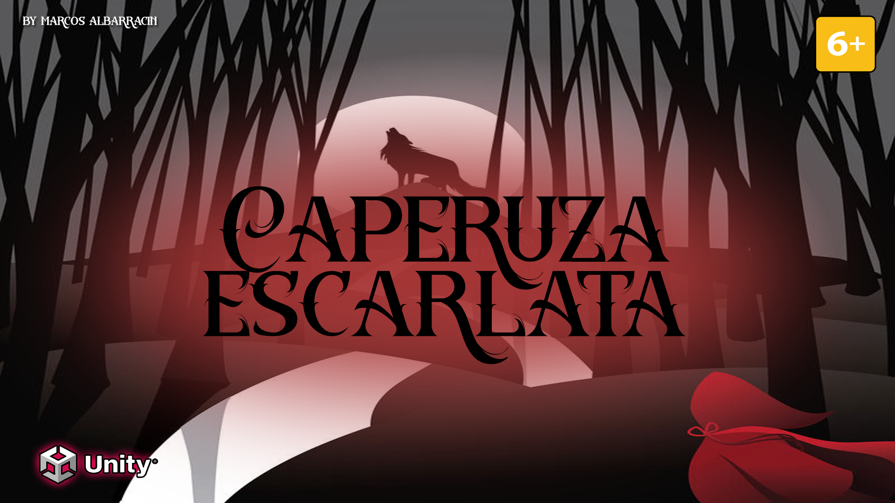

El Virus 3D es un espacio donde convergen videojuegos, creatividad y tecnología desde Uruguay hacia el mundo. Nacido como un proyecto personal, hoy funciona como estudio indie, portfolio profesional y plataforma de experiencias interactivas, todo en un mismo lugar.
Juegos propios, desde títulos publicados como Infernal Project en Steam, hasta prototipos y minijuegos en desarrollo jugables directamente en tu navegador.
Proyectos originales, como Cuentos Codificados, una serie que reinventa cuentos clásicos en mundos futuristas, o Virus Fútbol 3D, un simulador de fútbol narrativo y táctico ambientado en ligas latinoamericanas.
Exploraciones técnicas, pruebas con datos, motores gráficos, herramientas educativas y más...
Un recorrido real por el camino de crear videojuegos de forma independiente, desde la idea hasta el producto final.Este sitio también funciona como mi hoja de vida interactiva: una forma de mostrar lo que hago, cómo pienso y hacia dónde quiero ir. Cada juego, línea de código y diseño publicado en El Virus 3D es una invitación a jugar, explorar y compartir.
Gracias por visitar.
`;Proyecto Infernal
Virus Fútbol 3D
Caperuza Escarlata (Cuentos Codificados)